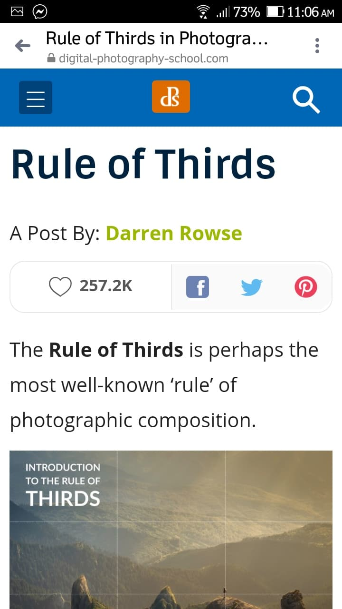

Design Principles Document
Michael Adam M. Diaz
Rule of Thirds
Digital Photography School
https://digital-photography-school.com/rule-of-thirds/ The “Rule of Thirds” one of the first things that beginner photographers learn about in classes on photography and rightly so as it can help you create well balanced and interesting shots. I will say right up front however that rules are meant to be broken and ignoring this one doesn’t mean your images are necessarily unbalanced or uninteresting. However a wise person once told me that if you intend to break a rule you should always learn it first to make sure your breaking of it is all the more effective! Also keep in mind it’s just one composition technique of many – we have quite a few articles on other techniques and rules of composition here.
Visual Hierarchy
Interaction Design Foundation
https://www.interaction-design.org/literature/topics/visual-hierarchy#:~:text=Visual%20hierarchy%20is%20the%20principle,guide%20them%20to%20desired%20actionsHuman vision is an amazing ability; we are capable of interpreting our surroundings so as to interact safely and accurately with little conscious effort. However, we are well attuned to nature and things that occur naturally in our environment, which has significant implications for design. Unless man-made products are attuned to, and support, human visual perception, the viewing experience suffers and there is significant potential that users will be unable to use your products quickly, safely, or without error. For this reason, it is essential that we investigate how we see the world and why we see things in the way we do in order to know what we can do to ensure our products provide the best viewing experience possible. This is why we have developed “The Ultimate Guide to Visual Perception and Design,” and why it is such an important topic for designers to master. For those of us who are blessed with good eyesight, we seldom consider it. That’s why going off to investigate the whys and hows involved is a little like trying to get behind the wind for the sake of finding the exact spot where it comes from. Happily, getting to the bottom of the phenomena involved in visual perception is a lot less laborious, and perhaps infinitely more fascinating. During the course, we will first cover the basic anatomy of the human eye so as to understand how vision is formed. We will then look at lots of different designs, evaluating each one according to specific aspects of the human visual experience. We will also identify how we can improve designs to support human vision better and improve usability as a direct result. Using the knowledge it imparts earlier on, this course will then analyze the design of icons in screen-based interfaces.
Hick's Law
UX Planet
https://uxplanet.org/design-principles-hicks-law-quick-decision-making-3dcc1b1a0632The user’s time is precious! Time = Life. Don’t allow bad design decisions to steal life from your users. Nobody is obligated to stay or use your product. (especially when there are alternatives) Get to know the user, interact with her. Guide the user toward her goal by highlighting the choices she cares about in that context. This will optimize decision making and speed up the completion of the task. In the end, both sides will be happy.